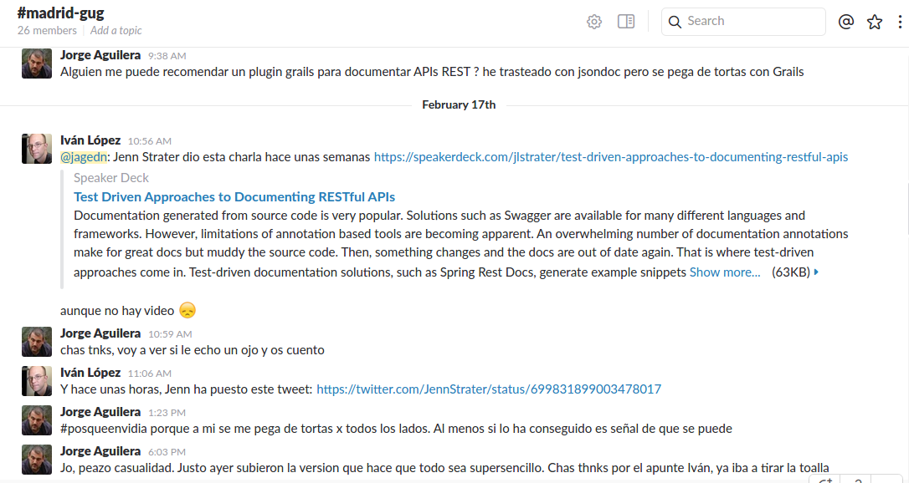

- Objetivo: utilizar los test de tu aplicación para que hagan el trabajo sucio de documentar nuestras APIs REST. Porque si la documentación no es válida, tus servicios NO SON VALIDOS (y viceversa,claro)
Testea y Documenta tu API REST
Jorge Aguilera$whoami
|
Jorge Aguilera, +20 años dándole a la tecla |
|
|
y desde hace +9 años como freelance (a.k.a. chico para todo) en Puravida Software |
REST TDD&D
Test Driven Development and Documenting a Grails Rest app
o cómo usar Spock para completar tu documentación
en realidad, cómo hacer que documentas como un profesional mientras los test lo hacen por tí
Requisitos
Te suena …
- Groovy & Grails
- Spock Framework
- Asciidoctor
- SOA & REST
Qué vamos a ver.
- Un poco de historia (reciente, tranquilos)
- TwitterPeople. Grails 3.x REST application
- Spockear. Un poco de test nunca viene mal
- Documentando. Que es a lo que hemos venido
Objetivo
Nuestra documentación en un formato legible y con especificaciones actualizadas
Un poco de REST-historia (personal)
O de cómo me dejé las pestañas con SOA…
que si primero el contrato vs que si primero el java que si cabecera, que si security, que si payload, ….
y en tu radar suena REST.. y lo entiendes, y dices esto es para mí…
y además Grails tiene un RestController
…y hasta un plugin para securizar las llamadas ( @alvaro_sanchez )
…pero no todo es tan fácil,
que si versión del API,
que si POST o PUT…
El camino al nirvana
- Llamadas RPC por todos lados.
- Ofreces los datos de tus tablas.
- Permites actualizar, e incluso borrar!!
- Te gustaría incluso enlazar recursos.
Glory of Rest (Martin Fowler)

… y la documentación ?

TwitterPeople
Proxy de usuarios de Twitter
Solicitamos un recurso Person a nuestro servicio y si no lo tiene lo importa desde Twitter
(Podíamos hacer la típica aplicación a base de datos, pero …)
TwitterPeople
java -jar twitterpeople-0.1.jar
TwitterPeople
Documentando nuestro modelo:
| Path | Type | Description |
|---|---|---|
id |
String |
user name |
description |
String |
a description |
followersCount |
Number |
how many followers |
friendsCount |
Number |
how many friends |
location |
String |
the user location |
Domain
Nuestro recurso en Grails:
/src/grails-app/domain/twitterpeople/Person.groovy
package twitterpeople
import grails.rest.Resource
@Resource(uri='/people', formats=['json','hal'], readOnly=true)
class Person {
static constraints = {
description nullable:true
location nullable:true
}
static mapping = {
id generator: 'assigned', type:'string'
}
String id // usaremos el name en lugar del id de twitter
String description
int followersCount
int friendsCount
String location
}Interceptor
Interceptamos las peticiones GET /people/${id}
/src/grails-app/controller/twitterpeople/PersonInterceptor
class PersonInterceptor {
TwitterProxyService twitterProxyService
boolean before(){
switch( params.action ){
case 'show':
Person add = twitterProxyService.createPerson(params.id)
if (add && add.validate()) {
add.save(flush: true)
}
break
}
true
}
}Service
Buscando en twitter al usuario
/src/grails-app/services/twitterpeople/TwitterProxyService
class TwitterProxyService {
Twitter twitter
Person createPerson( id ) {
try {
Person add
User user
if ("$id".isNumber() == false) {
add = Person.get(id)
if (add) {
return add
}
user = twitter.showUser("@${id}")
} else {
user = twitter.showUser(id as long)
}
if (user) {
add = new Person(user.properties)
add.id = id
}
add
}catch( TwitterException te){
te.printStackTrace()
null
}
}
}Spockeando
Como buen programador no liberamos nada sin probarlo primero. RestBuilder es un buen ayudante para testear servicios REST
/src/integration-test/groovy/twitterpeople/SimpleSpec
void "test user #username"(){
given:
RestBuilder rest = new RestBuilder()
when:
RestResponse response = rest.get("http://localhost:8080/people/${username}")
then:
response.status == 200
response.json.id == username
where:
username | description
'jagedn' | "nooo, si yo ya...."
'un_voluntario' | 'seguro que falla el test'
}Liberando TwitterPeople
$gradle assembleDocumentando
- Swagger, completísimo … supercomplicado.
- JsonDoc, incorpora hasta un playground … pero no funciona bien en Grails.
- Spring-rest-doc, esto ya empieza a ser otra cosa
Spring REST Docs helps you to document RESTful services. It combines hand-written documentation written with Asciidoctor and auto-generated snippets produced with Spring MVC Test.
- rest-assured, extenso DSL orientado a testear servicios REST
Testing and validation of REST services in Java is harder than in dynamic languages such as Ruby and Groovy. REST Assured brings the simplicity of using these languages into the Java domain.
Step by step …
- Preparar entorno
- Preparando documentación
- Preparando nuestros Specs
- Nuestro primer Spec
- Otro Spec mas complejo
- Compilar
- Vive!!!
- Visualizando la documentación in-situ
- ….Nuevas especificaciones, nuevos cambios, nueva documentación, vamos allá
Domain
Nuestro recurso en Grails:
/src/grails-app/domain/twitterpeople/Person.groovy
package twitterpeople
import grails.rest.Resource
@Resource(uri='/people', formats=['json','hal'], readOnly=true)
class Person {
static constraints = {
description nullable:true
location nullable:true
}
static mapping = {
id generator: 'assigned', type:'string'
}
String id // usaremos el name en lugar del id de twitter
String description
int followersCount
int friendsCount
String location
Date dateCreated (1)
}-
Ahora queremos saber cuando se ha creado en nuestro sistema
$gradle assembleWTF ?????
Spring REST docs:
- curl-request.adoc
- http-request.adoc
- http-response.adoc
- request-headers.adoc
- response-headers.adoc
- links.adoc
- request-parameters.adoc
- path-parameters.adoc
- document("apelo")
- document("${a_groovy_logic}")
- document("{class-name}/{method-name}")
Rest assured DSL
get("/lotto").then().assertThat().body("lotto.lottoId", equalTo(5));
get("/lotto").then().assertThat().body("lotto.winners.winnerId", hasItems(23, 54));
given().
param("key1", "value1").
param("key2", "value2").
when().
post("/somewhere").
then().
body(containsString("OK"));
String json = get("/lotto").asString()
List<String> winnderIds = from(json).get("lotto.winners.winnerId");Links e Info
- @jagedn Jorge Aguilera (me), 20+ años dándole a la tecla
- @pvidasoftware Puravida Software, Open source, open mind
- Grails (http://www.grails.org)
- Spock (http://spockframework.org)
- spring-rest-doc (projects.spring.io/spring-restdocs)
- rest-assured (https://github.com/jayway/rest-assured)
- AsciiDoc (http://asciidoctor.org)
- @JennStrater https://github.com/jlstrater/gr8data
/